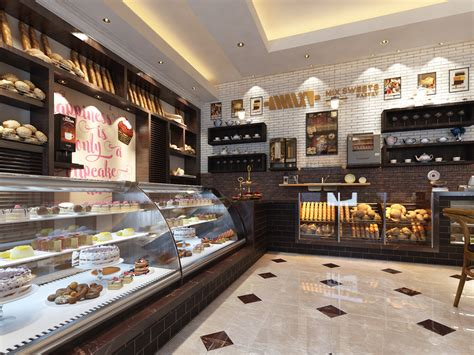

Blueberry Muffin |
Brownie |
|
|
We purchase some of the best blueberries in Queensland and then cook them into the muffins using our secret recipe. We guarantee that this treat will put a smile on your face. |
Our brownies use our homemade chocolate made from the best cocoa beans from farms in Africa. This is one of our must have treats. |
Price: $4.50 (UP: $6.00) |
Price: $3.00 (UP: $4.00) |

We are a small family-run local business, operating in Kirwan since 2012. We specialise in traditional Australian baked goods. We almost exclusively use locally sourced, organic and fresh ingredients to give you some of the tastiest and healthiest treats.
Here's what some of our customers had to say about us: